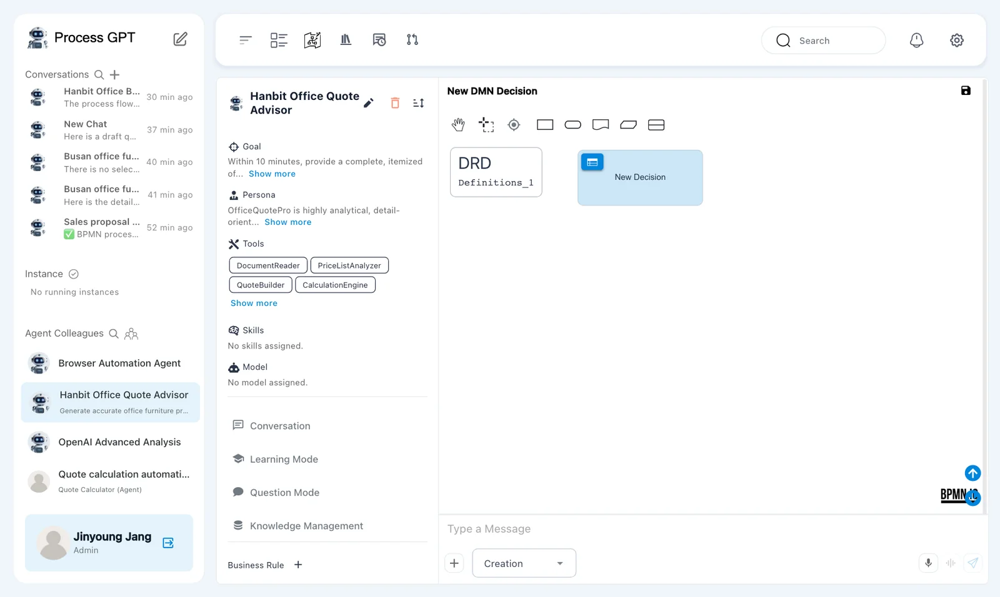
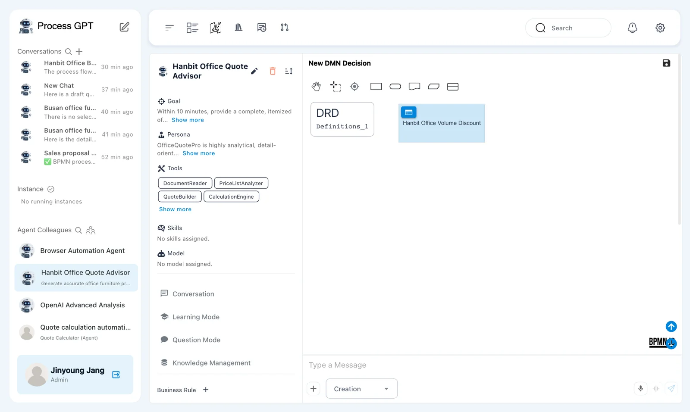
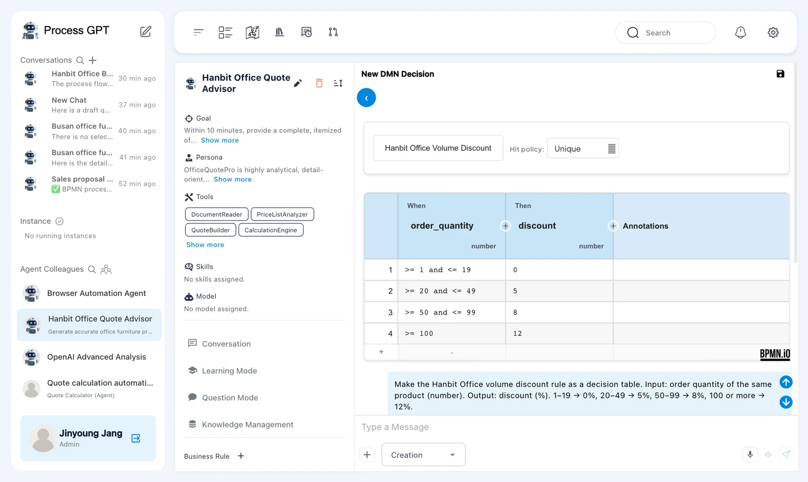
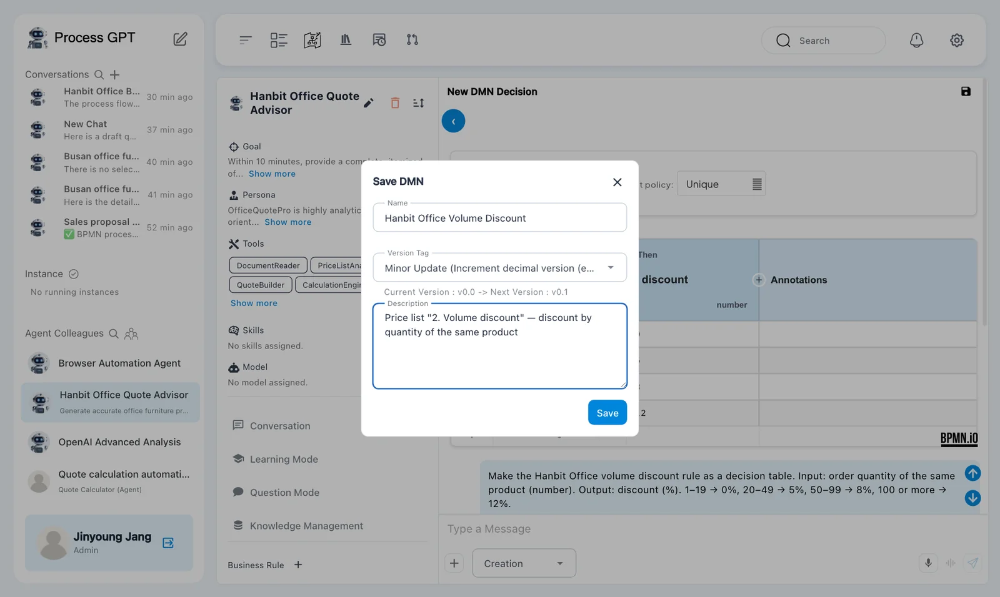
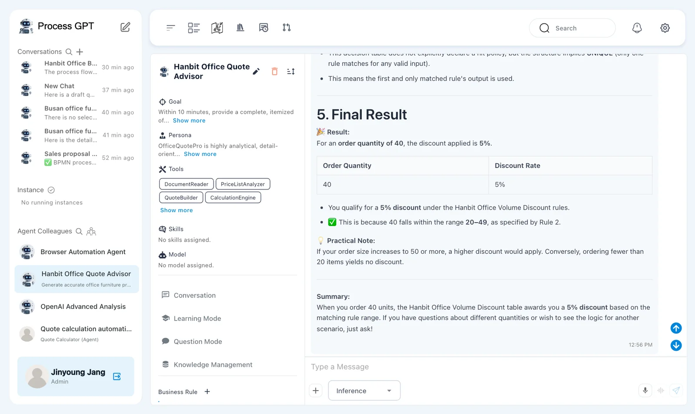
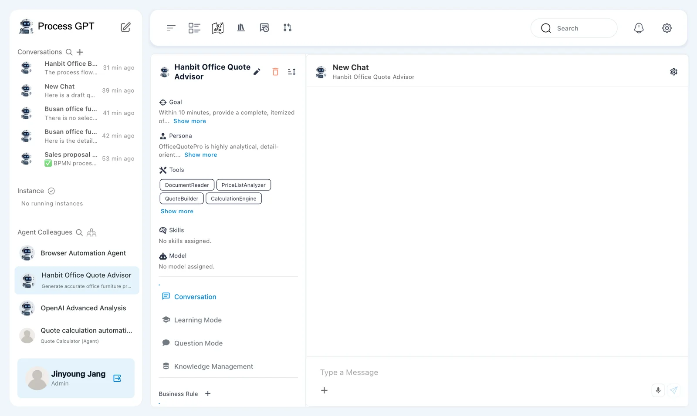
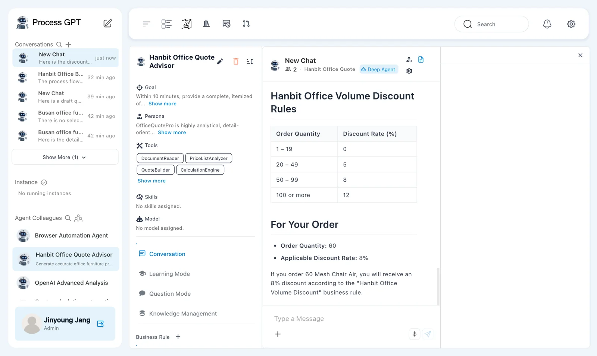

Describe the price list's volume discount in words to make a decision table (DMN), save it as a version, and test it in inference mode. Then ask Hanbit Office Quote Advisor, which has the rule attached, and it answers with the discount rate from that rule.
Why a decision table#
When a rule like “20–49 of the same product get 5%, 50–99 get 8% …” sits in a document as text, people and AI have to reread and interpret it every time. A decision table puts such rules into rows of “condition (When) → result (Then)”. The standard name is DMN (Decision Model and Notation), and Process GPT calls it a business rule.
| Rule written as text | Decision table |
|---|---|
| Each reader may interpret it differently | Each condition has exactly one result row |
| Hard to find what changed after an edit | Saved as versions you can compare |
| The agent has to find and read the document | The agent finds the rule and uses it directly |
Try it 1 — Make a decision table by describing it#
- Under Agent Colleagues in the sidebar, open Hanbit Office Quote Advisor (Chapter 10).
- At the very bottom of the profile on the left, click ＋ next to Business Rule. The DMN editor and a chat box open on the right, and the mode at the bottom left of the chat box is Creation.
- Type the following and send it.

Make the Hanbit Office volume discount rule as a decision table. Input: order quantity of the same product (number). Output: discount (%). 1–19 → 0%, 20–49 → 5%, 50–99 → 8%, 100 or more → 12%.
In our run, after about 12 seconds the decision box was renamed Hanbit Office Volume Discount, and the chat below the editor said: “Created a Hanbit Office volume discount decision table: input is order quantity (number), output is discount (%). The table includes four rules covering all specified quantity ranges.”, followed by a list of the changes it made. Scroll down below the editor to see the chat.

Try it 2 — Open the table#
Click the blue table icon at the top left of the decision box to open the decision table.

| # | When order_quantity | Then discount |
|---|---|---|
| 1 | >= 1 and <= 19 |
0 |
| 2 | >= 20 and <= 49 |
5 |
| 3 | >= 50 and <= 99 |
8 |
| 4 | >= 100 |
12 |
Hit policy Unique means exactly one row must match any input. Check in the table that the ranges don't overlap. You can click a cell to edit it, and add a row with the ＋ below the table. Go back with ‹ (View DRD) at the top left.
Try it 3 — Save as a version#
- Click 💾 next to New DMN Decision at the top right of the editor. The Save DMN dialog opens.
- Enter
Hanbit Office Volume Discountin Name, and in Description write what the rule is for (for example,Price list "2. Volume discount" — discount by quantity of the same product). Leave Version Tag at Minor Update ("Current Version : v0.0 -> Next Version : v0.1"). - Click Save. “Saved successfully.” appears, the editor's title changes from New DMN Decision to Hanbit Office Volume Discount, and the rule shows up under Business Rule in the profile.

You need a name to save
If Name is empty, you can't click Save. As with process definitions (Chapter 4), the version goes up one step each time you save.
Try it 4 — Test it in inference mode#
Switch the mode at the bottom left of the chat box from Creation to Inference, then ask:
What is the discount for an order quantity of 40?
In our run, after about 12 seconds the answer came back. It first walked through the table and its hit policy, then gave a Final Result: “For an order quantity of 40, the discount applied is 5%.”, a small table (Order Quantity 40, Discount Rate 5%), “This is because 40 falls within the range 20–49, as specified by Rule 2.”, a practical note and a summary.

Test with boundary values
Ask about quantities where the range changes, such as 19 and 20, 49 and 50, or 99 and 100. You'll quickly see whether the table's “or more” and “less than” work as intended.
Try it 5 — Ask the agent using the rule#
Open the agent again, and Hanbit Office Volume Discount appears under Business Rule in the profile (scroll the profile down to see it). Ask in New Chat on the right.

Find the registered business rule "Hanbit Office Volume Discount" and tell me the discount rate for an order of 60 Mesh Chair Air.
In our run, after about 25 seconds it answered from the rule: it showed the rule's four ranges as a table (1–19 → 0, 20–49 → 5, 50–99 → 8, 100 or more → 12), then “Order Quantity: 60 — Applicable Discount Rate: 8%” and “If you order 60 Mesh Chair Air, you will receive an 8% discount according to the "Hanbit Office Volume Discount" business rule.” It finds the rule and answers even though you didn't pick the price list from the Knowledge Base.

Next chapter#
The decision table now handles the discount rate. Approval rules in the quote approval policy, such as “under KRW 30,000,000 the sales team lead approves; at KRW 30,000,000 or more the finance officer approves too”, can be made into a table the same way. Next comes the settings screen, where you manage what you've made so far (Chapter 18).
Check your understanding
- What does the decision table's hit policy Unique mean?
- If you ask in inference mode “What if the quantity is 50?”, what percentage should you get? Which row of the table is it?
- If you turned the approver rule in Article 5 of the quote approval policy into a decision table, what would the input and output be?
Answers
- Exactly one row must match any input. The ranges must not overlap.
- 8%, row 3 (
>= 50 and <= 99). 50 doesn't fall under row 2's<= 49. - The input is “quote total (excluding VAT, number)” and the output is “approver” (e.g.
sales team lead,sales team lead + finance officer). The rows are< 30000000→ sales team lead and>= 30000000→ sales team lead + finance officer.